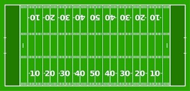
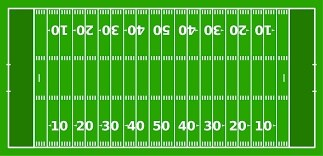

The glaringly obvious difference between arena football and your your typical standard American football
(referred to as "standard game") is the size of the field. Arena football is played on the same dimensions of
your standard ice hockey rink, with the field of play being a total of 66 yards long (50 scrimmage yards and 8
yard endzones on either side) and 28 yards wide. Compared to the standard game having a field length of 120 yards
long (100 scrimmage yards and 10 yard endzones) and 49 yards wide. Other major differences include the use of
only 8 players per team in arena football compared to 11 players per team in the standard game. Scores are
typically much higher in arena football, and there is a heavier emphasis on passing and less on running. Most
modern arena football leagues also include a rule where a player on offense may be in motion prior to the ball
being snapped, where in the standard game everybody on offense must be set and still for at least a second before
the ball is snapped.
.jpg) 
